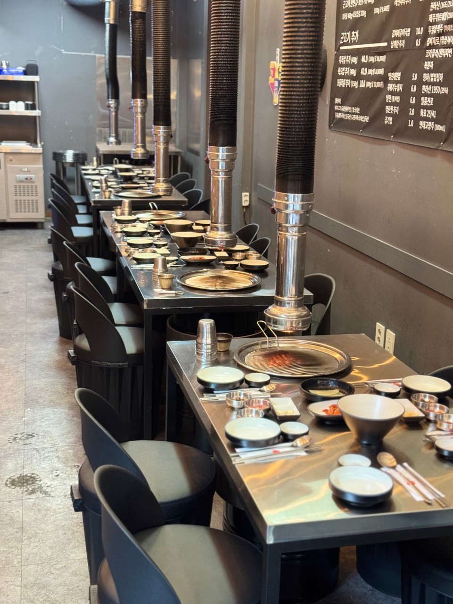
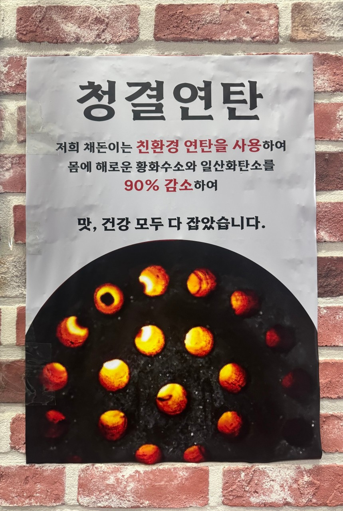

[확정 필요: 대표 인터뷰 후 약 1,500자 원고 작성]
13년 전 시작
[확정 필요: 대표 인터뷰 후 작성 — 13년 전 시작]
왜 제주 근고기와 연탄불인가
[확정 필요: 대표 인터뷰 후 작성 — 왜 제주 근고기와 연탄불인가]
명란젓의 시작
[확정 필요: 대표 인터뷰 후 작성 — 명란젓의 시작]
지점을 내주는 방식
[확정 필요: 대표 인터뷰 후 작성 — 지점을 내주는 방식]

채돈이 이야기

[확정 필요: 대표 인터뷰 후 약 1,500자 원고 작성]
[확정 필요: 대표 인터뷰 후 작성 — 13년 전 시작]
[확정 필요: 대표 인터뷰 후 작성 — 왜 제주 근고기와 연탄불인가]
[확정 필요: 대표 인터뷰 후 작성 — 명란젓의 시작]
[확정 필요: 대표 인터뷰 후 작성 — 지점을 내주는 방식]

손님을 맞이하기 전의 매장.

매장에 붙인 연탄 안내문 · 원본 크게 보기 ↗
소개와 사진은 당사자 동의를 받은 뒤 공개합니다.

[확정 필요: 지점장 소개 첫 문장]. [확정 필요: 본점 수련 경험 두 번째 문장]. [확정 필요: 손님에게 전하는 세 번째 문장].

[확정 필요: 지점장 소개 첫 문장]. [확정 필요: 본점 수련 경험 두 번째 문장]. [확정 필요: 손님에게 전하는 세 번째 문장].

[확정 필요: 지점장 소개 첫 문장]. [확정 필요: 본점 수련 경험 두 번째 문장]. [확정 필요: 손님에게 전하는 세 번째 문장].

[확정 필요: 지점장 소개 첫 문장]. [확정 필요: 본점 수련 경험 두 번째 문장]. [확정 필요: 손님에게 전하는 세 번째 문장].

[확정 필요: 지점장 소개 첫 문장]. [확정 필요: 본점 수련 경험 두 번째 문장]. [확정 필요: 손님에게 전하는 세 번째 문장].